Machine Learning - Anomaly Detection.
1. Lab Scope
The scope of the workshop is to configure and gain more in-depth understand of Machine Learning - Anomaly Detection.
Anomaly Detection is all about input validation of data entered into the web application. Protecting against data leakage or exploitation of the web appliction or the server.
In this exercice we will simulate a customer situation in which we will cover both controlled and uncontrolled web application changes. In other words, the application is changed with and without notifying the WAF administrator about the web application changes.
This will give insights into how FWB will automatically adapt to and adjust the machine learning protection.
During this lab the web application will only be protected by Machine Learning - Anomaly Detection.
The following sequencial steps will be performed to configure, simulate, and validate the protection provided by Machine Learning - Anomaly Detection.
- Access and attack the unprotected web application
- Enable Machine Learning - Anomaly Detection
- Auto-learn the mathematical protection model and re-attack the application, validate protection
- Perform a controlled application change, validate protection
- Perform an uncontrolled appliation chage, validate protection
- Manually adjust ML-AD configuration to increase security strictness
During the exercise we will use web application http://finance.fortinet.demo/ and only the Firstname input field of the form.
(You can use any of the other form fields to repeat or try different scenarios youself)
2. Configuration Setup
NOTE: Make sure Machine Learning - Bot Detection is in "Stop" state!
Then environmnet is already partly configured and we walk you through it.
2.1 Enable Packet and ML logging
To log the packet content and retain packet payload for machine learning events, it was enabled for logging.
- Log&Report > Log Config > Other Log Settings
- Enable Traffic Packer log: Enable
- Machine Learning: Enable
- Apply
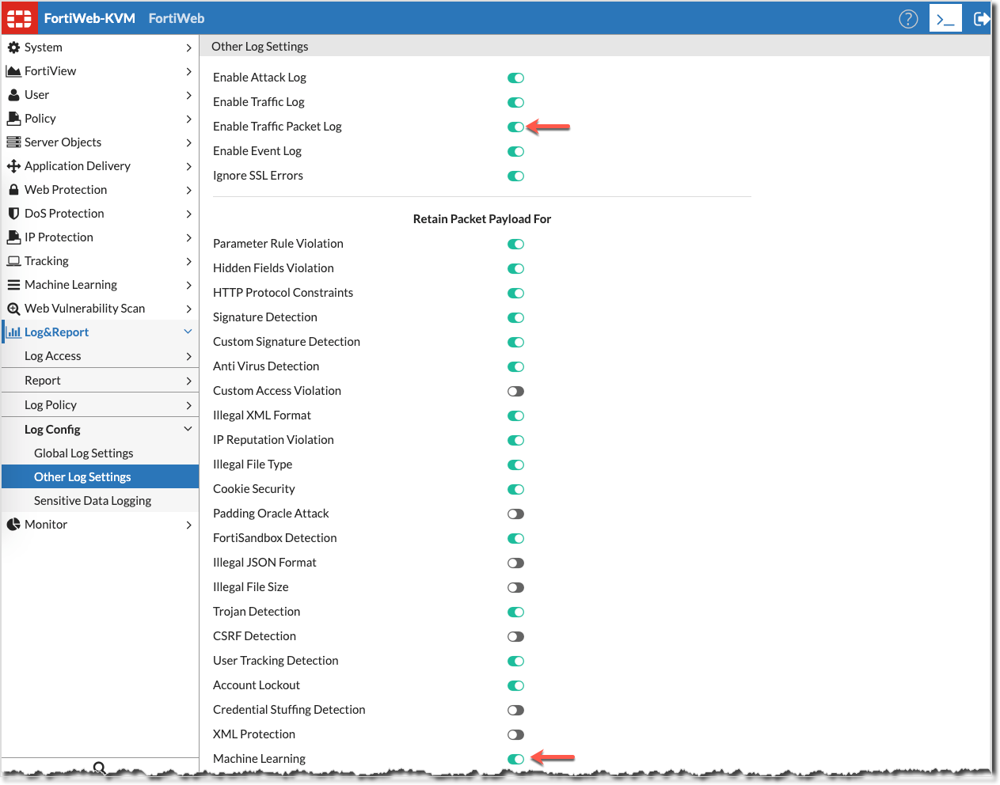
2.2 Enable Machine Learning
Machine Learning can be enabled on a per Server Policy basis and already enabled for the Finance application.
- Policy > Server Policy > Finance
- Web Protection Profile: <blanc> (Select blank if a profile is configured)
- OK (Make sure you click OK to save, in case you needed to change profile selection.)
The following steps were performed to enable Machine Learning Anomaly
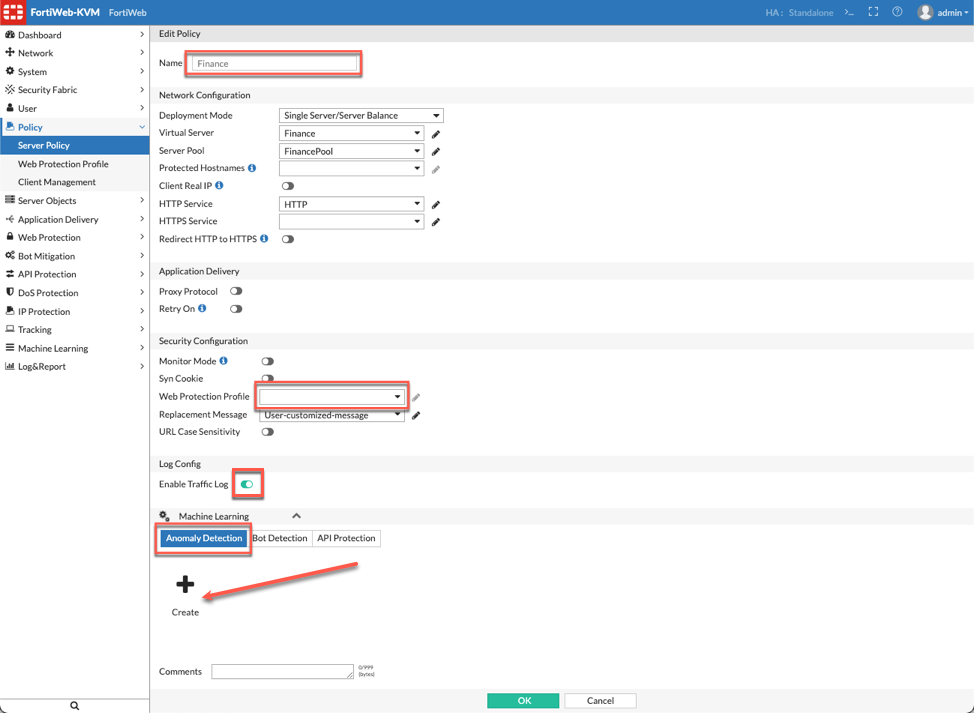
- Allow sample collection for domain: finance.fortinet.demo
- OK
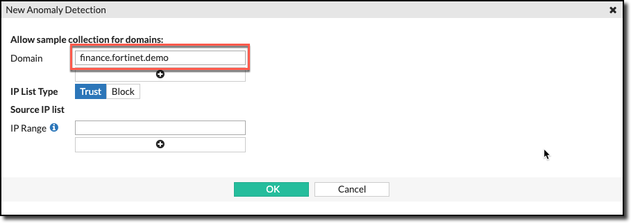
The pre-configured Server Policy should be as shown below
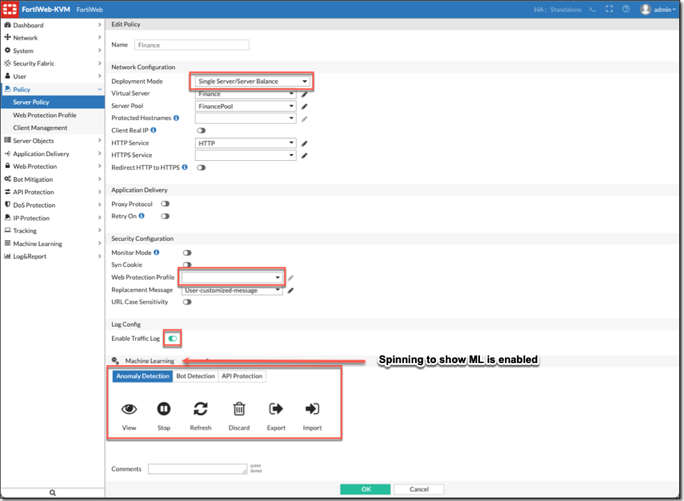
2.3 Machine Learning CLI settings
By default FortiWeb will apply logic to learn intelligently good web traffic and not from a single source IP but multiple unique source IP's. For the lab environment we needed to override this logic because we have only a single client.
Note: The following config changes are already pre-configured. You need to reapply them when you delete or recreated the Machine Learning - Anomaly Detection profile.
config waf machine-learning-policy
edit 1
set sample-limit-by-ip 0
set ip-expire-cnts 1
end
-
sample-limit-by-ip 0 (accept unlimited requests per source IP)
-
ip-expire-cnts 1 (minimal number of unique source IP-addresses)
2.4. Anomaly Detection Settings
The sensitivity level for this exercise, the "Strictness Level for Anomaly" is set to the default value 3 (Standard Deviation). After you finished the full exercise you could rerun the exercise and increase/decrease the level to observe different learning behavior.
- Machine Learning > Machine Learning Policy > Finance
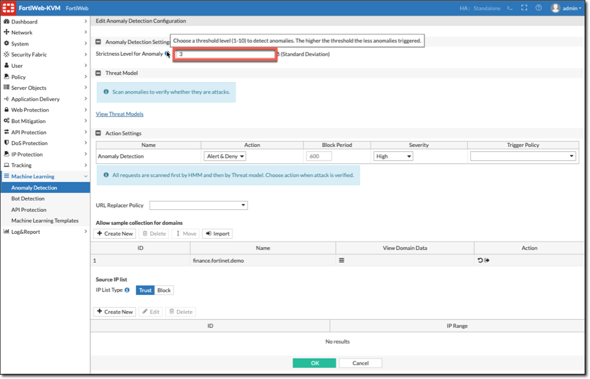
3. Attack Application
- Browse http://finance.fortinet.demo/fwb/index.html
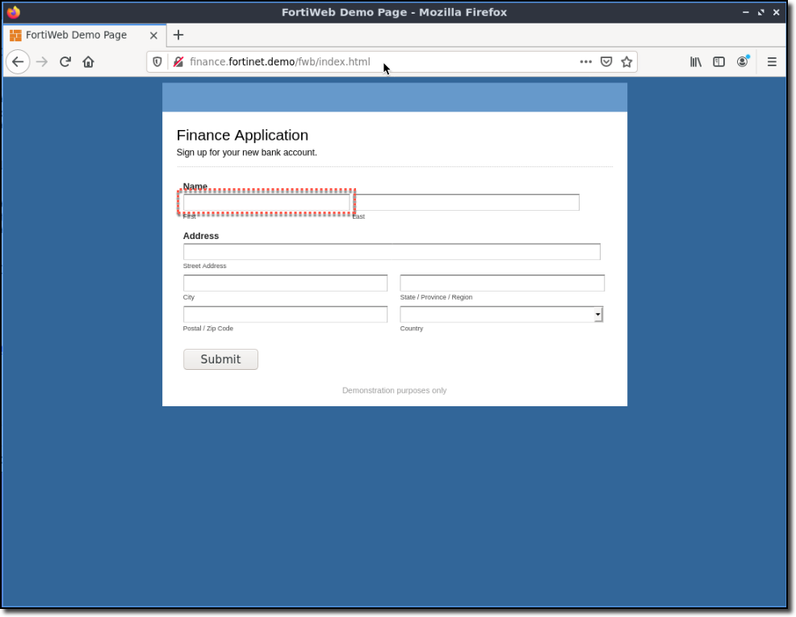
Note: You can copy and past the samples from AttackSamples.txt file located on the Lubuntu Desktop
Submit following inputs in firstname field:
- <script>alert</script>
- '1 or 1=1
- xxxxxxx
- xxx.xxx@xxx.xxx
- Wed May 17 10:59:36 EDT 2006
- 02 08 2010 09:44:57
- abc;$compress_message=gzcompress("hack message", %252012)
- 1234567890
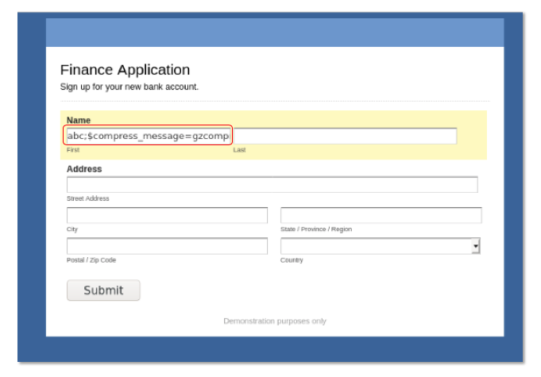
4. Build Machine Learning Model
./FortiDemo-ML-AD-traffic.sh
- Enter choice: 9
- Amount of requests: 3000
- URL: http://finance.fortinet.demo/fwb/index.html
- Method: POST
- Parameter name: firstname
- Parameter type: email
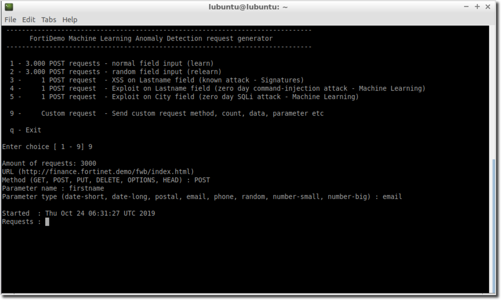
If you're fast enough you will see the auto learning of the application tree and input fields, together with the status.
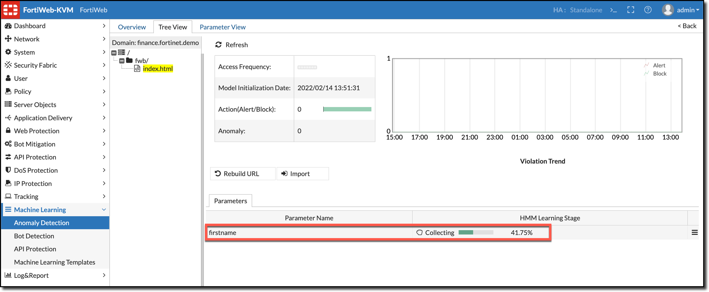
Just after a few seconds (~20) you will notice that Machine Learning switched from Collecting to Running mode, and protects the Firstname field.
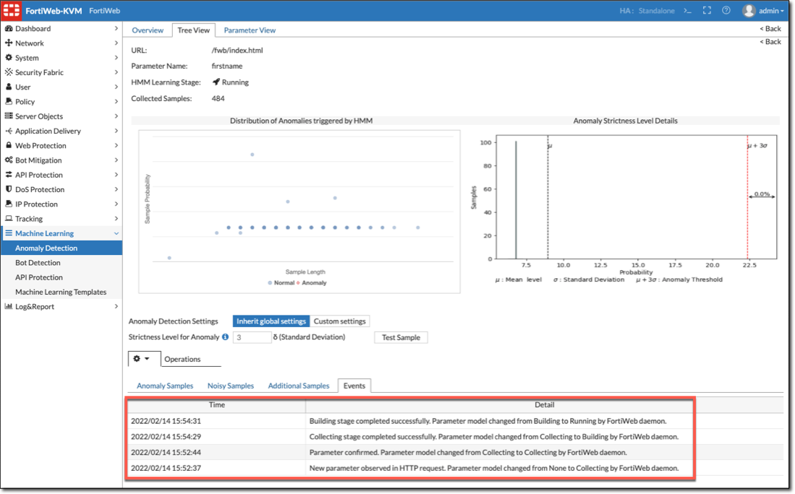
Machine Learning will keep learning after being in Running mode and adjust the mathimatical model based on additional requests received.
The second Collecting, Building and Running phase happened with this exercise after approax 2 minutes. You can notice the differences on the Distribution of Anomalies and Anomaly Strictness graphs.
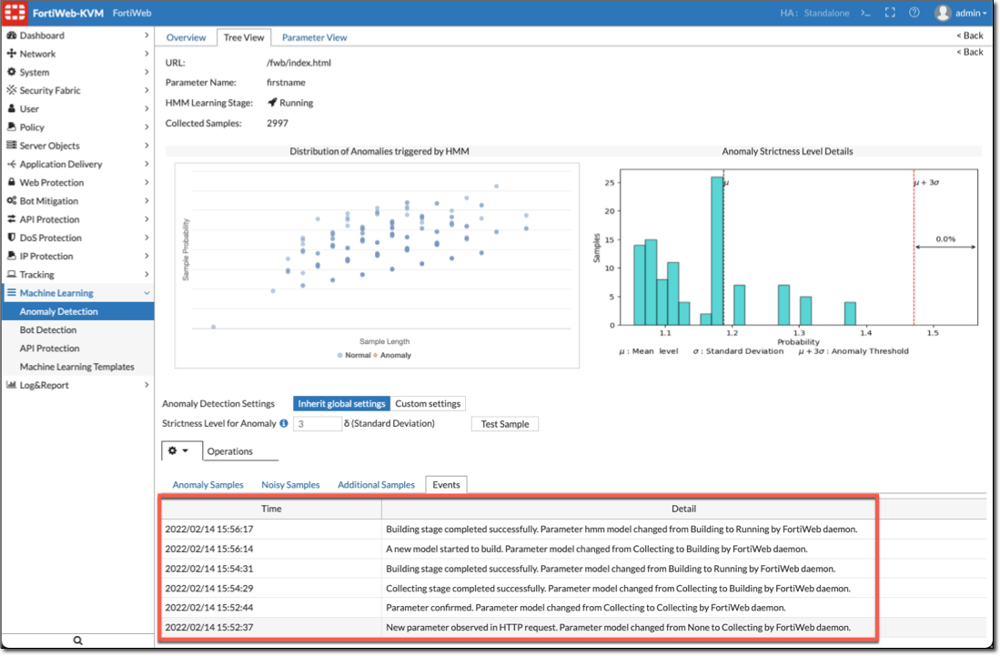
Now the mathimatical model for anomaly detection is created, fwb flags some of the initial attacks we send as "Noisy Sampes" because they deviate to much from the model.
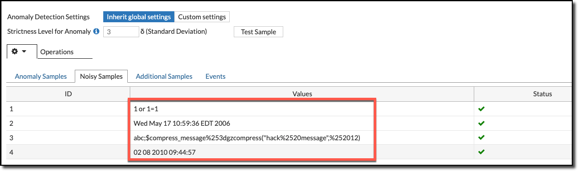
4.1 Sample Test
We can validate input samples to see which will be recognized as normal and anomaly inputs. this can be done throught the "Test Sample" button.
Run again through all the input values to see which are marked as Normal or Anomaly.
We are going to repeate this step later after the controlled and uncontrolled web site changes as well.
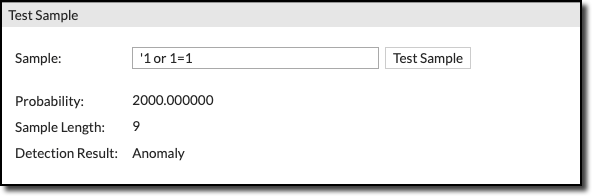
| Input | Result |
|---|---|
| <script>alert</script> | Anomaly |
| '1 or 1=1 | Anomaly |
| xxxxxxx | Normal |
| xxx.xxx@xxx.xxx | Normal |
| Wed May 17 10:59:36 EDT 2006 | Anomaly |
| 02 08 2010 09:44:57 | Anomaly |
| abc;$compress_message=gzcompress("hack message", %252012) | Anomaly |
| 1234567890 | Anomaly |
The Firstname form field was learned to have an email format like input, not strict but email alike.
5. Application Changes
In this section we will examine how FortiWeb handles web application changes.
This will be done by learning different input formats, simulating controlled and uncontrolled web application changes.
This can be increased up to 1440 mine per CLI (set renovate-short-time), but not lower then 15 minutes. Make sure that there's at least 15min inbetween finishing and starting the next generated traffic requests!
5.1 Controlled Change
The web developer indicated that the Firstname" input field changed to numeric input and would like to have this change adopted by the WAF administrator.
This can do this by manually Rebuilding** the firstname parameter. This will drop the mathematical model and start the learning fresh.
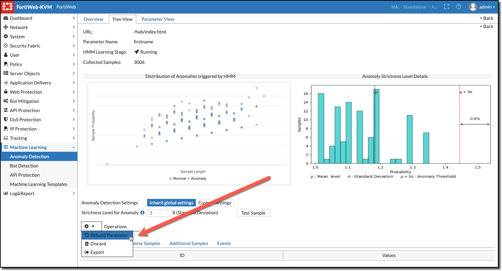
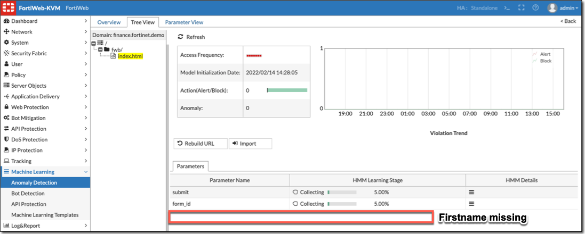
Next we generate web request to relearn the Firstname input field and create a new mathematical model to detect anomalies. This step could be done explicitly by the developer or just by taking user input.
./FortiDemo-ML-AD-traffic.sh
- Enter choice: 9
- Amount of requests: 3000
- URL: http://finance.fortinet.demo/fwb/index.html
- Method: POST
- Parameter name: firstname
- Parameter type: number-small
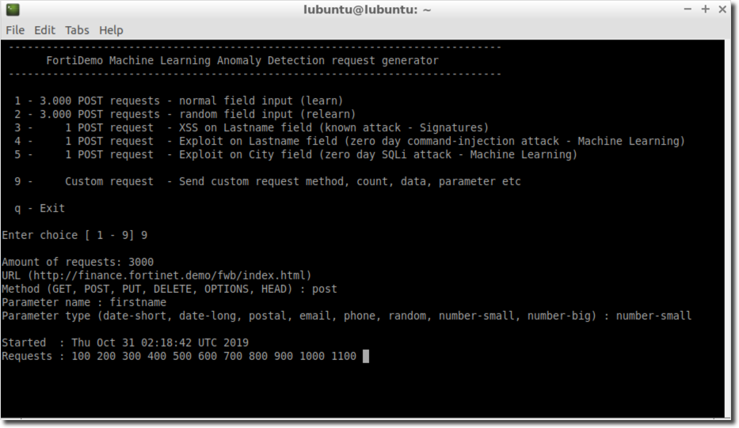
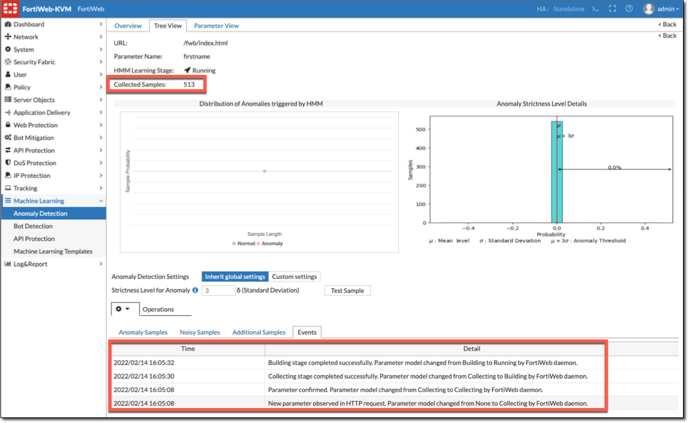
Let is run into the 2nd model after receiving the 3000 requests.
Notice there are no more Noisy Samples which were there previously.
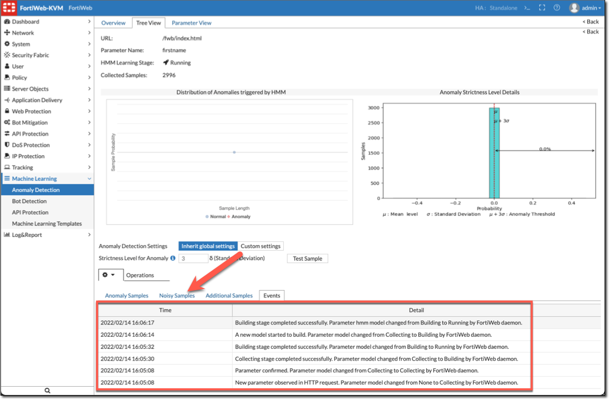
5.1.1 Sample Test
Time to repeat the Sample Test on the newly created mathimatical model.
| Input | Result |
|---|---|
| <script>alert</script> | Anomaly |
| '1 or 1=1 | Anomaly |
| xxxxxxx | Anomaly |
| xxx.xxx@xxx.xxx | Anomaly |
| Wed May 17 10:59:36 EDT 2006 | Anomaly |
| 02 08 2010 09:44:57 | Anomaly |
| abc;$compress_message=gzcompress("hack message", %252012) | Anomaly |
| 1234567890 | Normal |
It becomes clear that the firstname field no longer considers an email like format to be normal and send it to the second phase (SVM) to detect if the inpyt is malicious.
5.2 Uncontrolled Change Date
Next step is to simulate the uncontrolled change by allowing a long date notation format into the application.
./FortiDemo-ML-AD-traffic.sh
- Enter choice: 9
- Amount of requests: 3000
- URL: http://finance.fortinet.demo/fwb/index.html
- Method: POST
- Parameter name: firstname
- Parameter type: date-long
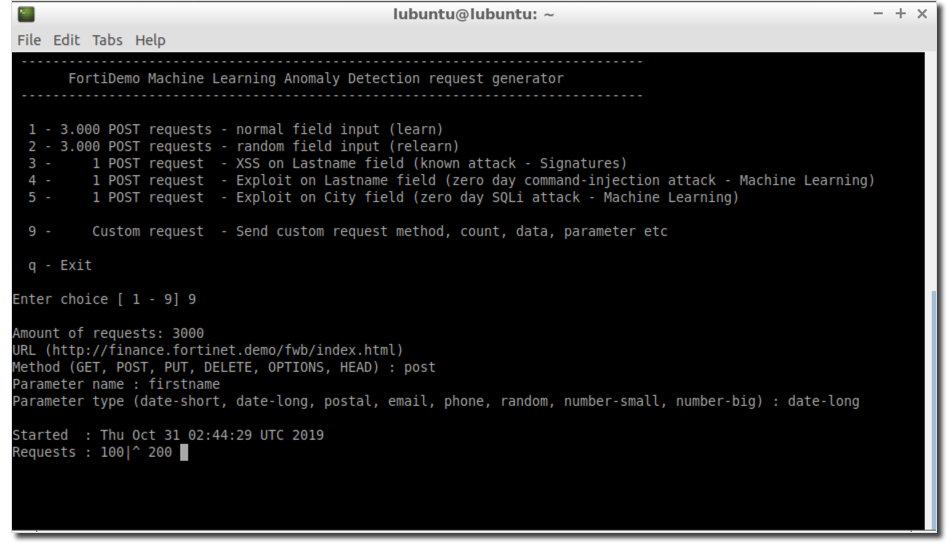
The Firstname parameter will remain in Running state while detecting the application change. Moves shortly from Building to Running state once the new mathimatical model is generated.
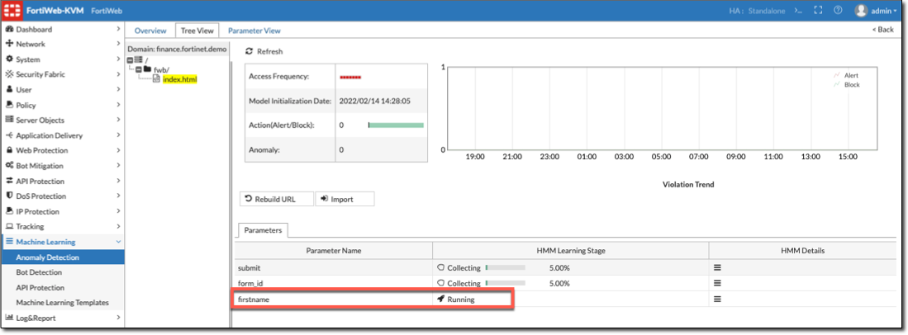
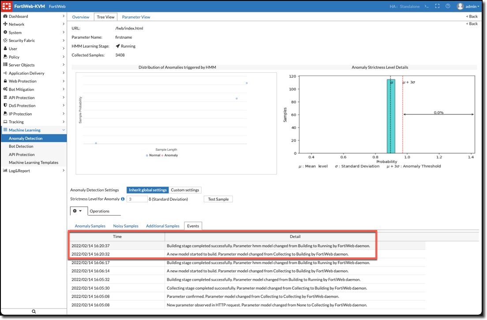
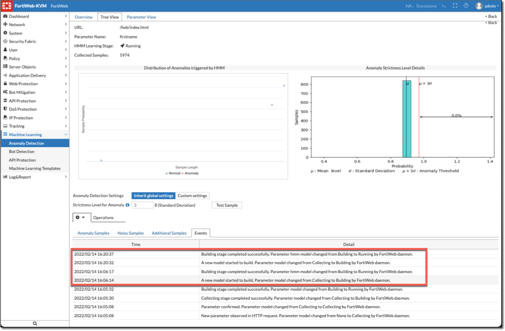
5.2.1 Sample Test
| Input | Result |
|---|---|
| <script>alert</script> | Anomaly |
| '1 or 1=1 | Anomaly |
| xxxxxxx | Normal |
| xxx.xxx@xxx.xxx | Anomaly |
| Wed May 17 10:59:36 EDT 2006 | Normal |
| 02 08 2010 09:44:57 | Normal |
| abc;$compress_message=gzcompress("hack message", %252012) | Anomaly |
| 1234567890 | Normal |
Due to the automatic relearning and rebuilding of the mathematical model, it merged the Number and Date format to match the model. Those inputs will be passed on to the web application without being send to the 2nd Machine Learning phase (SVM) for malicious detection.
5.3 Uncontroled Change Email
./FortiDemo-ML-AD-traffic.sh
- Enter choice: 9
- Amount of requests: 3000
- URL: http://finance.fortinet.demo/fwb/index.html
- Method: POST
- Parameter name: firstname
- Parameter type: email
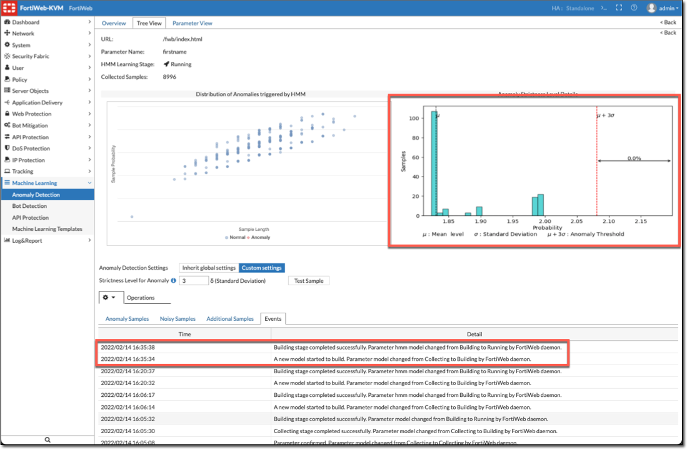
| Input | Result |
|---|---|
| <script>alert</script> | Anomaly |
| '1 or 1=1 | Anomaly |
| xxxxxxx | Normal |
| xxx.xxx@xxx.xxx | Normal |
| Wed May 17 10:59:36 EDT 2006 | Normal |
| 02 08 2010 09:44:57 | Normal |
| abc;$compress_message=gzcompress("hack message", %252012) | Anomaly |
| 1234567890 | Normal |
6. Manual Configuration
6.1 Strictness Level
The FortiWeb administrator can manually adjust a few parameters.
The Strictness Level for Anomaly for example. This allows the input to validate the input less or more exactly matching the model and by that sending more or less traffic for malicious inspection by SVM.
If we set the latest learned model to strictness level 1, we will notice that xxx.xxx@xxx.xxx will not be seen as normal input anymore.
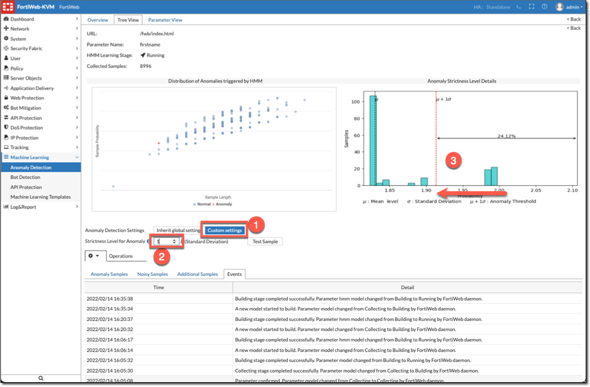
| Input | Result |
|---|---|
| <script>alert</script> | Anomaly |
| '1 or 1=1 | Anomaly |
| xxxxxxx | Normal |
| xxx.xxx@xxx.xxx | |
| Wed May 17 10:59:36 EDT 2006 | Normal |
| 02 08 2010 09:44:57 | Normal |
| abc;$compress_message=gzcompress("hack message", %252012) | Anomaly |
| 1234567890 | Normal |
6.2 Noisy Samples
In case there is specific input that violates the policy, or in the rare case of False Negative, then there is an option to manually add Additional Samples to the mathimatical model.
Let us add two additional samples and test them on anomaly detection (HMM).
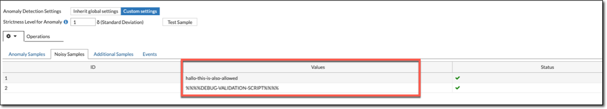
Restesting the input via the Sample Test now shows it is marked as Normal input.
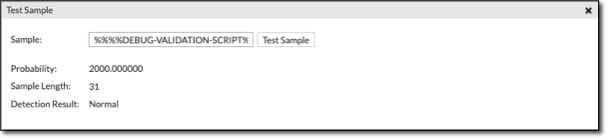
SUMMARY
Legacy WAF
:-( Negative Security: Signatures
:-( Negative+Positive Security
:-( Application Learning
FortiWeb WAAP with Machine Learning
Layer1: Anomaly Detection (HMM)
Layer2: Attack Identification (SVM)
:-) Detect ZERO DAYs
:-) No False Positive / No False Negative
:-) No possible EVASION
:-) No Tuning (FP/FN/Application Change)
This workshop is now complete.